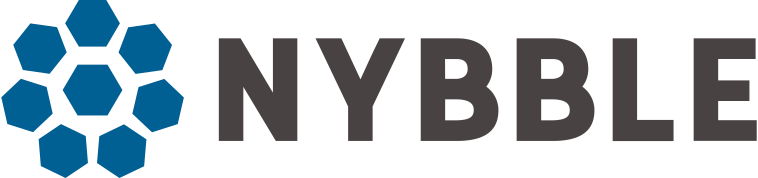

Nybble Hub
Nybble Hub est une plateforme centrale de SOC. Dans cette plateforme, toutes les alertes et événements SIEM sont traités :
- En tant que client, vous pouvez suivre toutes les investigations en cours et interagir avec les équipes Nybble. Vous pouvez également afficher l'état de votre sécurité via des tableaux de bord clairs et efficaces.
- en tant qu'analyste, vous pouvez effectuer efficacement la qualification des alertes
- en tant que Hunter, vous pouvez participer à des campagnes de Threat Hunting et publier des rapports de compromission